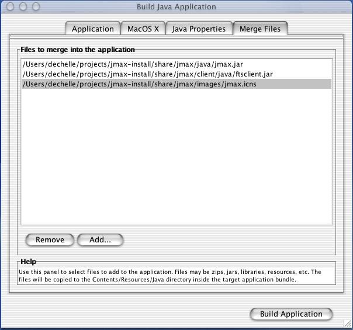

You must have installed jMax somewhere with a "make install". The installation directory is set by the configure script, with option --prefix, as in:
./configure --prefix=$HOME/jmax-install
Launch MRJAppBuilder.
In "Application" panel:
<installation-directory>/share/jmax/java/jmax.jar
ircam.jmax.JMaxApplication
jMax.app
In "MacOS X" panel:
jMax
jmax.icns

In "Java Properties" panel:
com.apple.macos.useScreenMenuBar true

In "Merge Files" panel:
<installation-directory>/share/jmax/client/java/ftsclient.jar
<installation-directory>/share/jmax/images/jmax.icns

then click on "Build Application" button. The application should build into the directory that you have set in "Application" panel.
After generating the application, you must copy by hand the following directories and files:
<installation-directory>/bin <installation-directory>/lib <installation-directory>/share/jmax/images <installation-directory>/share/jmax/packages <installation-directory>/share/jmax/config.jmaxto the subdirectory
jMax.app/Contents/Resourceslocated under the "output file" that you have set when building the application.
This can be done using script post-mrjappbuilder, located in subdirectory bin under jMax source directory (as long as you use the same directories):
#!/bin/sh if [ ! -d $HOME/jMax.app/Contents/Resources/jmax ] ; then mkdir $HOME/jMax.app/Contents/Resources/jmaxRoot ; fi cp -r $HOME/projects/jmax-install/bin $HOME/jMax.app/Contents/Resources/bin cp -r $HOME/projects/jmax-install/lib $HOME/jMax.app/Contents/Resources/lib cp -r $HOME/projects/jmax-install/share/jmax/images $HOME/jMax.app/Contents/Resources/share/jmax/images cp -r $HOME/projects/jmax-install/share/jmax/packages $HOME/jMax.app/Contents/Resources/share/jmax/packages cp -r $HOME/projects/jmax-install/share/jmax/config.jmax $HOME/jMax.app/Contents/Resources/share/jmax/config.jmax
It looks like there is a bug in MRJAppBuilder that makes that the generated application uses the default icon. This is solved by copying the icon file jMax.app/Contents/Resources/Java/jmax.icns to the directory jMax.app/Contents/Resources overwriting the file that is generated by MRJAppBuilder. This is taken into account by the script post-mrjappbuilder.